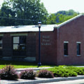

|  |
Steel Plant Studios
Acquired in 1997
Art gallery; Studio |
Marist purchased an industrial site across the street from Marist in 1997 to house the college library while the James A. Cannavino Library was being built. After the Library was completed, Marist renovated the old storehouse and turned it into the Steel Plant Studios, a 3,200 square-foot space that is now home to the Marist College Art Gallery. Several kinds of studios live inside including 2-D/Graphic Design, Drawing & Painting, 3-D Sculpture, Digital Media, and a studio specifically for Special Processes & Techniques. It also features a 2,500 square-foot Art Gallery where students can display their work for members of the community to see. The Gallery holds its industrial-like feel with its concrete floors and 15-foot exposed ceilings. The Gallery is open from September to May and showcases the work of student and faculty artists working with various types of fine arts media.